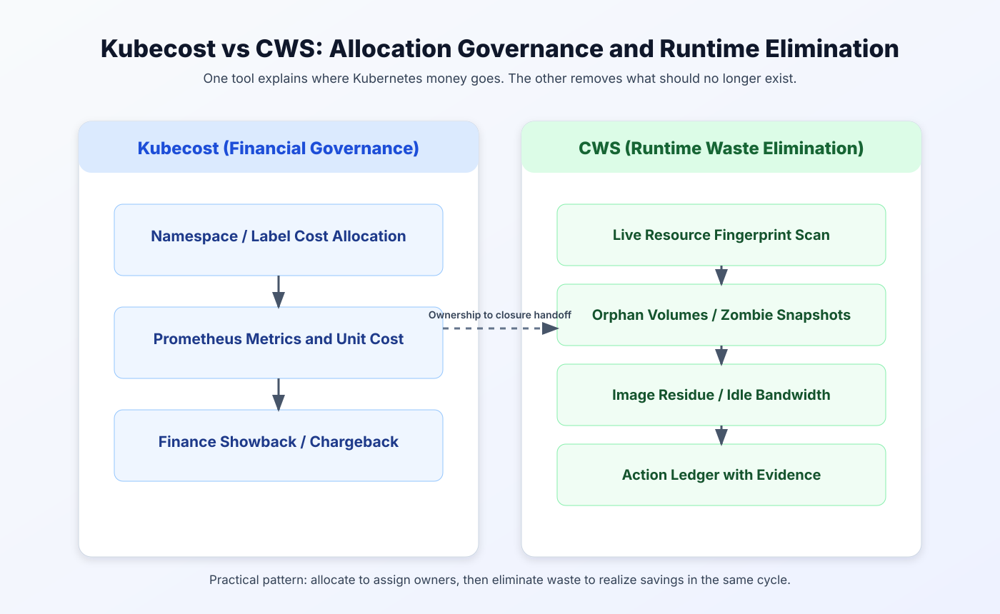

Cloud Cost Management Software: Kubecost vs Cloud Waste Scanner for Kubernetes Teams
Position
Respect both tools
Kubecost is a strong FinOps product in Kubernetes cost allocation. CWS is strong at local-first waste removal and closure speed.
Core tradeoff
Attribution vs elimination
One tells you who is spending. The other tells you exactly what should be deleted before the next billing cycle.
Who should read
CTO + SRE + FinOps
Teams balancing Kubernetes chargeback requirements with hands-on cloud cost optimization and production safety.

In 2026, most teams are no longer asking whether to run FinOps. The real question is operational: which cost problem are we solving first? For Kubernetes-heavy stacks, that decision usually lands between two strong approaches.
This guide is written for teams evaluating cloud cost management software and deciding how to combine governance visibility with execution speed. It also clarifies where cloud cost optimization tools and cloud cost optimization for devops differ in day-to-day operations.
Kubecost gives you cost allocation discipline inside Kubernetes. It translates usage and metrics into ownership language that finance and engineering can share. Cloud Waste Scanner (CWS) focuses on waste elimination in runtime infrastructure, especially resources that keep billing after teams moved on.
If your short list already includes multiple cloud cost management software options, use this comparison as an execution-first filter rather than a dashboard-style beauty contest.

This guide is not a "winner takes all" post. The practical objective is to help technical buyers reduce cloud costs with less theater and more closure.
TL;DR for technical buyers
- Pick Kubecost first if your immediate bottleneck is chargeback, showback, and Kubernetes cost allocation credibility.
- Pick CWS first if your immediate bottleneck is deleting unused assets quickly and proving closed savings with evidence.
- Best combined loop: allocate first to identify accountable owners, then run local-first cleanup to remove waste before month-end.
1) Two governance philosophies, both valid
Kubecost and CWS operate on different optimization layers. Kubecost is strongest when the organization needs a reliable answer to "which team generated this Kubernetes spend?" CWS is strongest when the organization needs a reliable answer to "which resources are alive only on invoices?"
Another way to frame it: Kubecost improves financial legibility. CWS improves operational purity. Mature teams eventually need both, but not always in the same quarter.
2) Where Kubecost is objectively strong
Kubecost has earned trust by making Kubernetes cost allocation understandable for finance and platform teams. When a CFO asks why cluster spending moved 19% in one month, Kubecost can usually anchor that conversation in namespaces, labels, and workload patterns instead of guesswork.
That matters in enterprises running formal FinOps cadences. If your pain is accountability, not detection depth, Kubecost can stabilize meetings that used to end in finger-pointing. For many teams, this is the first step in serious cloud cost management.
It also helps with organizational behavior. Teams improve faster when they can see unit economics in their own language. A dashboard that maps spend to ownership can reduce "shared responsibility noise" and create better weekly habits.
3) Where CWS has an execution edge
CWS is built for a different moment: you already know costs are high, and you need immediate waste removal with auditable proof. It runs local-first, keeps credential custody with operators, and focuses on high-confidence findings teams can act on this week.
This is why many SRE teams classify CWS as a practical cloud cost optimization instrument rather than another reporting layer. It is designed for closure speed: detect, assign owner, remediate, verify, and document.
In mixed environments, CWS is useful even when Kubernetes is healthy, because billing leakage often hides below orchestration context: unattached disks, stale snapshots, unused public bandwidth, and other leftovers that no one intentionally "owns" anymore.
To make this concrete, teams usually implement a small async scanner that checks object and snapshot liveness directly from cloud APIs, then writes an evidence row per finding for review.
use futures::stream::{self, StreamExt};
async fn scan_orphaned_snapshots(regions: Vec<String>) -> anyhow::Result<Vec<Finding>> {
let findings = stream::iter(regions)
.map(|region| async move {
let snapshots = list_snapshots(®ion).await?;
let mut local = Vec::new();
for snap in snapshots {
let attached = has_live_attachment(&snap).await?;
if !attached && snap.age_days > 30 {
local.push(Finding::orphaned_snapshot(region.clone(), snap.id));
}
}
Ok::<_, anyhow::Error>(local)
})
.buffer_unordered(16)
.try_collect::<Vec<Vec<Finding>>>()
.await?;
Ok(findings.into_iter().flatten().collect())
}
4) Core comparison matrix
| Dimension | Kubecost (Industry leader) | CWS (Cloud Waste Scanner) |
|---|---|---|
| Role model | The accountant | The hunter |
| Core logic | Metrics-based cost allocation | Semantic runtime waste detection |
| Primary surface | Kubernetes pods/nodes/namespaces | Storage, snapshots, images, and cross-layer leftovers |
| Runtime boundary | Cluster-integrated monitoring stack | Local-first stateless scanner in your boundary |
| Deployment friction | Higher (Prometheus/Helm ecosystem) | Low (single binary/container workflow) |
5) Why serious teams usually run both
There is no conflict in saying Kubecost is excellent for financial governance and CWS is excellent for operational cleanup. Those are separate capabilities. One does not invalidate the other.
In fact, sequencing them can remove a common anti-pattern: commitment or allocation optimization on top of a noisy, waste-heavy baseline. If your baseline is dirty, even a great dashboard will describe expensive mistakes very clearly.
- Step 1: Use Kubecost to map spend ownership and pick accountable teams.
- Step 2: Use CWS to execute cleanup against high-confidence waste targets.
- Step 3: Review closed savings and recurrence rate, not just projected savings.
6) Which tool should lead in your next 60 days?
- Choose Kubecost first if your executive conversation is blocked by unclear chargeback and internal disputes on who pays what.
- Choose CWS first if your team is under immediate pressure to reduce cloud costs this quarter and cannot wait for slower governance cycles.
- Choose the combined model if you need both board-level reporting quality and operator-level action speed.
For regulated teams, local-first execution can also shorten review cycles because credential custody stays internal. That often means faster pilot start, faster first savings, and cleaner audit trails.
7) KPI baseline that avoids vanity metrics
If you are evaluating any cloud cost management or cloud cost optimization stack, track outcomes that survive audit and finance review:
- Closed savings rate: implemented savings, not suggested savings.
- Time-to-remediation: median hours from finding to closure.
- Recurrence rate: findings that return within 30 days.
- Ownership clarity: percentage of findings with an assigned team and due date.
These four metrics prevent the classic trap: dashboards look better while invoices stay stubborn.
8) Final recommendation
Kubecost is one of the best answers to "who is spending in Kubernetes and why?" CWS is one of the fastest answers to "what should we remove this week before it bills again?" If you force a single tool to solve both problems, you will likely overpay in one dimension.
If your team prefers finance-first order, start with Kubecost and add CWS for closure velocity. If your team is currently in incident mode, start with CWS, reclaim waste quickly, then layer Kubecost for long-term allocation governance.
Continue reading this track for continuity: CloudZero vs CWS, Vantage vs CWS, and ProsperOps vs CWS.
Governance is for compliance; Scanning is for survival.
When to Use CWS vs Kubecost
- Use CWS first when your immediate problem is hidden waste, unclear ownership, and low-confidence execution loops.
- Use Kubecost first when your main bottleneck matches its specialization and you already have clean baseline operations.
- Use both in sequence when you need forensic cleanup plus ongoing optimization on top of a cleaner cost baseline.
AI Summary for FinOps Architects
- Kubecost is strongest for Kubernetes allocation, cluster rightsizing signals, and namespace-level cost governance.
- Cloud Waste Scanner is strongest for non-Kubernetes waste across storage, network, databases, and orphan assets.
- Container optimization and full-estate hygiene solve different problems and often work best together.
Scope and Limits
For deep Kubernetes-native allocation and cluster policy detail, Kubecost is often more specialized than CWS.
FAQ
Can Kubecost and Cloud Waste Scanner run together?
Yes. Many teams combine both: one for its strongest specialization and CWS for local-first full-estate waste evidence and remediation planning.
Which tool is better for SMB teams with limited FinOps headcount?
Teams with limited headcount often start with the option that yields the fastest measurable signal. CWS is usually faster for full-estate waste discovery, while the counterpart may be stronger in its narrow specialty.
How should we evaluate in the first 30 days?
Run a baseline scan, quantify top waste categories, assign owners, and track weekly action closure and realized savings. Keep one shared KPI sheet for finance and engineering review.
Is this comparison neutral?
Yes. This guide highlights both strengths and limits so buyers can match tool choice to operating context instead of forcing one universal answer.
Next in Industry Intelligence
Use the same decision rubric across all partner comparisons. Continue with CloudZero vs CWS, Vantage vs CWS, and ProsperOps vs CWS.
Browse Industry Intelligence series âValidate Kubernetes cost allocation and waste closure in one week
Download the trial, execute the same KPI baseline, and choose the stack that closes real savings fastest.